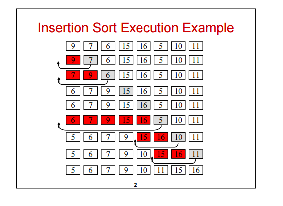
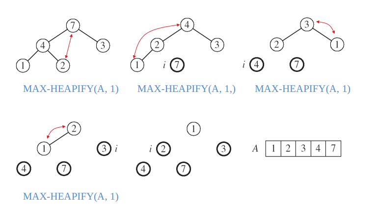
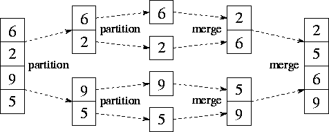
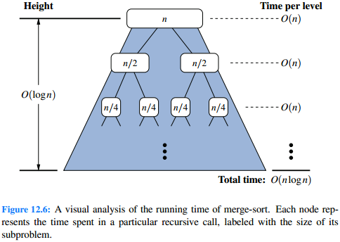
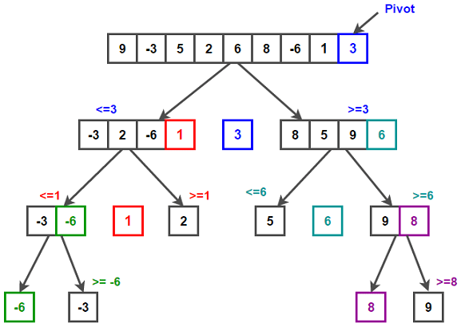
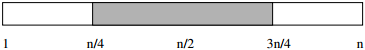
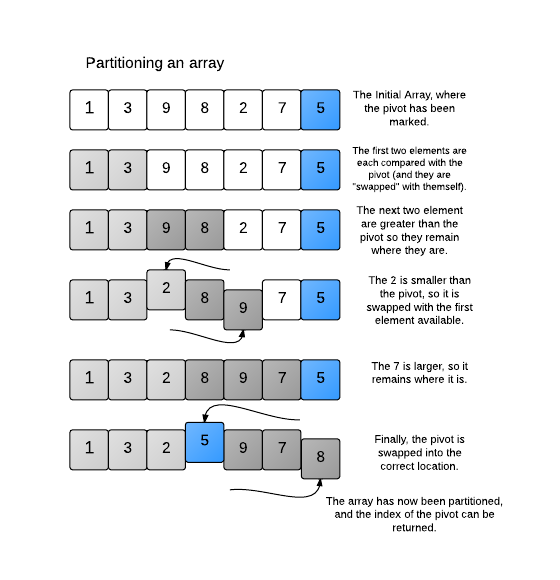

Sorting
Sorting is the process of rearranging a sequence of elements, usually an array, to put them in order (either increasing or decreasing).We may sort elements by value, or we may sort by a key (for example, we might want to sort student objects by name).
A comparison sort is a sorting algorithm that determines the order only by comparing two elements at a time.
First we will look at several O(n2) and O(nlogn) comparison sorts.
Then we will see how to sort faster (in some situations) with non-comparison-based algorithms.
Sample code
Sorting - Selection sort, insertion sort, mergesort, quicksort (with Lomuto partitioning), quickselect
Quicksort with Hoare partitioning
O(n2) algorithms
Selection sort
Find the smallest element and put it in the correct spot, then find the 2nd smallest element and put it in the correct spot, etc.There are n iterations, and on average ~n/2 comparisons per iteration, so it is O(n2).
Insertion sort

Insertion sort. Source: geeksforgeeks.org
Runtime
There are n iterations. In each iteration, we shift elements to make room for the current element, but if the current element is close to the correct spot, there is less shifting.
Insertion sort is O(n2) average-case, but performs well when the array is small or nearly sorted. Therefore insertion sort is often used in other algorithms (e.g. mergesort and quicksort) to sort small subarrays.
O(nlogn) algorithms

Heapsort. Source: kullabs.com
Heapsort
Heapsort sorts an array in two phases:- Build a max heap.
- Build the sorted array by repeatedly removing the maximum element, moving them to the space that opens up at the end of the array.
Building a heap bottom-up is O(n). Removing the elements is O(nlogn), because there are n removals and each removal is O(logn). The total runtime is O(nlogn) worst-case.
Heapsort is an in-place algorithm, which means that it uses O(1) extra space.
Mergesort

Mergesort. Source: mcs.anl.gov/~itf/dbpp
- Divide the problem into smaller subproblems.
- Conquer the subproblems by solving them recursively, until they are small enough to solve directly.
- Combine the solutions to the subproblems into the solution to the original problems.
- Divide the array into two halves.
- Conquer: Recursively sort the two halves.
- Combine: Merge the two halves into one sorted sequence.

Source: Goodrich p. 539
On each level of recursion, the array is divided in half, so there are O(logn) levels. The total time spent merging on each level of the tree is O(n). The total runtime is O(nlogn) worst-case.
Mergesort typically uses O(n) extra space because it copies the elements into another array while merging (although it can be done in-place).
Quicksort

Quicksort. Source: techiedelight.com

About half of the pivots will be good (close to the median).
Source: Skiena p. 126

Lomuto's partitioning scheme for quicksort. Source: hackerearth.com
- Divide: Partition the array into two halves.
- Conquer: Recursively sort each half.
Partitioning
Partition the array by choosing a pivot element, and rearrange the elements such that all elements to the left of the pivot are less than or equal to the pivot, and all elements to the right of the pivot are greater than or equal to the pivot. Two well-known partitioning schemes are Hoare partitioning and Lomuto partitioning.
Runtime
The best case is O(nlogn), when the array is always divided exactly in half, because there are O(logn) levels of recursion, and the total time spent partitioning on each level is O(n). The worst case is O(n2), when every number ends up on the same side of the pivot.
Average case runtime
The runtime depends on the height of the recursion tree. Suppose we always have a "good partition" - a partition with no more than 3/4 of the elements in the larger half. The worst possible good partition reduces the array size by a factor of 4/3. It will take at most log4/3n good partitions to reach an array size of 1. We expect about half of the partitions to be good, so the expected height is at most 2log4/3n = O(logn).
Quicksort is popular because good implementations typically run faster than other O(nlogn) sorting algorithms.
Worst-case O(nlogn) runtime
The worst-case runtime can be improved to O(nlogn) by using the median-of-medians algorithm to find an approximate median to use as the pivot. This method is slow, so it is not used in practice.
Introsort is a hybrid algorithm (an algorithm that combines multiple algorithms. It begins with quicksort and switches to heapsort if the recursion depth grows too large. This allows us to achieve quicksort's fast average-case runtime while avoiding quicksort's worst-case runtime.
Quicksort randomization
If we always pick an element from the same position as the pivot, then certain inputs will always have the worst-case runtime. For example, if the pivot is always the leftmost element, an already-sorted array will be the worst case. Many implementations avoid this by picking a random pivot, or by randomly shuffling the array before starting. This guarantees that all inputs have an expected runtime of O(nlogn).
Another common strategy is to choose three elements and then compute the median-of-three to use as a pivot. This improves the probability of picking a good pivot.
Quicksort uses O(logn) extra space (for the recursion stack).
Quickselect
Suppose we want to find the kth smallest element of an unsorted array. Since we are only interested in one element, it is not necessary to sort the entire array. Quickselect begins by partitioning the array into two halves, just like quicksort. Instead of recursively sorting both halves, we call quickselect recursively on only one of the two halves, because we know which half will contain the kth smallest element.The best-case runtime is O(n) because the total work is n + n/2 + n/4 + ... (the sum of a geometric series).
The expected runtime is also O(n). (proof: Cormen pp. 217-219)
The worst-case runtime is O(n2).